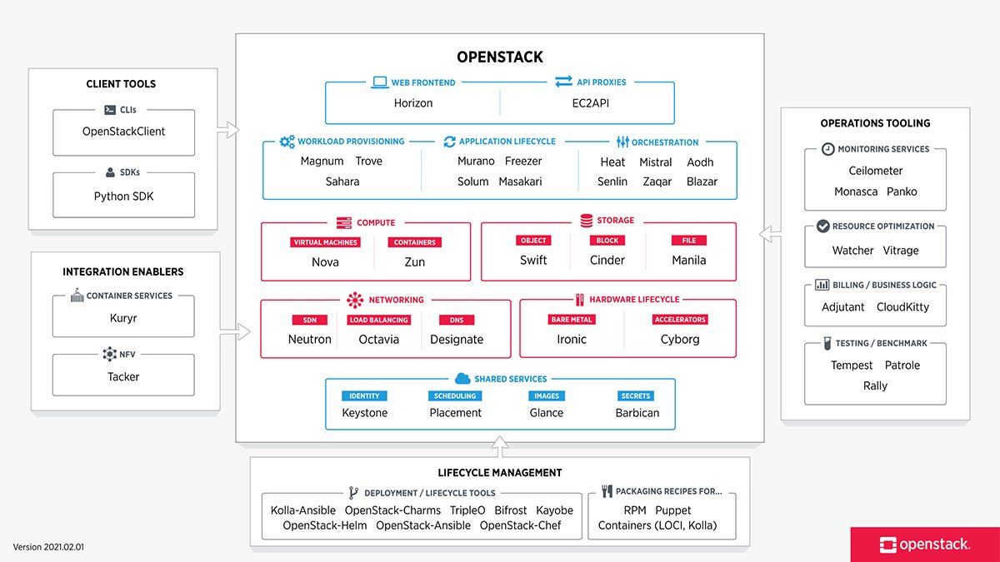
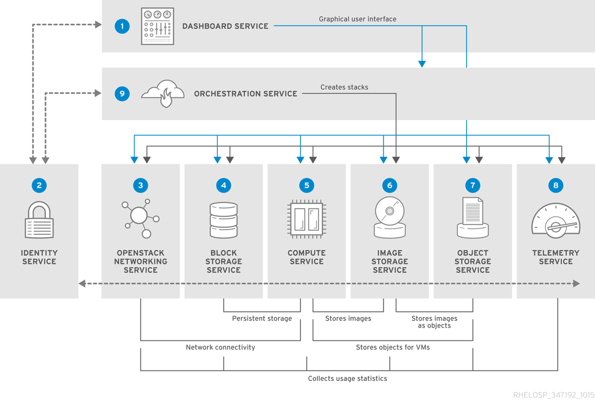
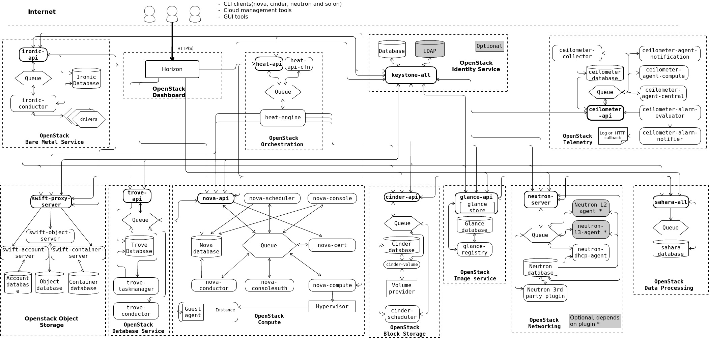

การบรรยายที่ 1: บทนำสู่ Cloud Computing และ OpenStack¶
วัตถุประสงค์การเรียนรู้¶
- เข้าใจรูปแบบบริการและรูปแบบการติดตั้งของ Cloud Computing
- รู้จักประวัติและระบบนิเวศของ OpenStack
- ระบุบริการหลักของ OpenStack และบทบาทของแต่ละบริการ
Cloud Computing คืออะไร?¶
Cloud Computing คือการส่งมอบทรัพยากรไอทีตามความต้องการผ่านอินเทอร์เน็ต โดยมีการคิดค่าบริการแบบ Pay-as-you-go
รูปแบบบริการ (Service Models)¶
| รูปแบบ | คำอธิบาย | ตัวอย่าง |
|---|---|---|
| IaaS | Infrastructure as a Service — เช่า VM, Storage, Network | OpenStack, AWS EC2 |
| PaaS | Platform as a Service — Deploy แอปโดยไม่จัดการ Infrastructure | Heroku, OpenShift |
| SaaS | Software as a Service — ใช้แอปผ่านเว็บ | Gmail, Salesforce |
รูปแบบการติดตั้ง (Deployment Models)¶
- Public Cloud — Infrastructure แชร์กันใช้ (AWS, Azure, GCP)
- Private Cloud — Infrastructure สำหรับองค์กรเดียว
- Hybrid Cloud — ผสมผสาน Public และ Private
- Community Cloud — แชร์ระหว่างองค์กรที่มีเป้าหมายร่วมกัน
ภาพรวม OpenStack¶
พันธกิจของ OpenStack
สร้างแพลตฟอร์ม Cloud Computing แบบ Open Source ที่เป็นที่นิยมใช้ทั้งในภาครัฐและเอกชน โดยไม่คำนึงถึงขนาด
ประวัติ¶
- 2010 — โครงการร่วมระหว่าง NASA และ Rackspace
- 2012 — ก่อตั้ง OpenStack Foundation
- 2023 — OpenInfra Foundation ควบคุมโครงการ
- ล่าสุด
- Epoxy (2025.1) – Apr 2025
- Flamingo (2025.2) – Oct 2025
- Gazpacho (2026.1) – Apr 2026
- Hibiscus (2026.2) – Sep 2026
- Indri (2027.1) – Mar 2027 (estimated)
ทำไมต้องใช้ OpenStack?¶
✅ Open Source — ไม่ผูกขาด Vendor
✅ Ecosystem บริการกว้างขวาง
✅ ใช้งานในหลายพันองค์กรทั่วโลก
✅ Community สนับสนุนเข้มแข็ง
✅ API รองรับความเข้ากันได้กับ AWS (ในบริการหลายตัว)
ภาพรวมบริการหลัก¶
| บริการ | ชื่อโค้ด | หน้าที่ |
|---|---|---|
| Identity | Keystone | ยืนยันตัวตนและสิทธิ์ |
| Compute | Nova | จัดเตรียม Virtual Machine |
| Networking | Neutron | บริการเชื่อมต่อเครือข่าย |
| Image | Glance | จัดเก็บและจัดการรูป VM |
| Block Storage | Cinder | พื้นที่จัดเก็บ Block แบบถาวร |
| Object Storage | Swift | ระบบจัดเก็บ Object แบบขยายได้ |
| Dashboard | Horizon | หน้า Web UI |
| Orchestration | Heat | จัดสรรทรัพยากรด้วย Template |
| Telemetry | Ceilometer | เก็บข้อมูล Meter และ Monitoring |

¶ภาพรวมสถาปัตยกรรม¶
┌─────────────────────────────────────────────────────────┐
│ Horizon (Web UI) │
├─────────────────────────────────────────────────────────┤
│ OpenStack REST APIs │ Python SDKs │ CLI Clients │
├─────────────────────────────────────────────────────────┤
│ Nova │ Neutron │ Cinder │ Glance │ Swift │
├─────────────────────────────────────────────────────────┤
│ Message Queue (RabbitMQ) │ Database (MariaDB) │
├─────────────────────────────────────────────────────────┤
│ Hypervisor (KVM/QEMU) │ Linux Bridge / OVS │
└─────────────────────────────────────────────────────────┘

Logical Architecture¶

OpenStack เป็นระบบปฏิบัติการคลาวด์โอเพนซอร์ส (Open-source Cloud Operating System) ขนาดใหญ่ ที่รวบรวมบริการต่างๆ (Services) เข้ามาทำงานร่วมกันเพื่อสร้างและบริหารจัดการ Infrastructure as a Service (IaaS) ทั้งระบบ Compute, Storage และ Networking ผ่านแดชบอร์ดหรือ API
สำหรับสถาปัตยกรรมของ OpenStack (OpenStack Architecture) ได้รับการออกแบบมาให้เป็นแบบ Modular (แยกตามหน้าที่) และ Scale-out (ขยายออกด้านข้างได้ง่าย) โดยประกอบด้วย Core Services หลักๆ และสถาปัตยกรรมภาพรวมดังนี้ครับ
1. สถาปัตยกรรมภาพรวม (Conceptual Architecture)¶
ในทางปฏิบัติ โหนด (Node) ใน OpenStack จะถูกแบ่งหน้าที่ออกเป็นหลักๆ ดังนี้:
- Controller Node: สมองกลของระบบ ทำหน้าที่รัน API, Authentication (Keystone), Dashboard (Horizon), และ Orchestration ต่างๆ รวมถึง Database (MariaDB) และ Message Queue (RabbitMQ)
- Compute Node (Hypervisor): โหนดที่ใช้รัน Virtual Machines (VMs) จริงๆ โดยมักใช้ KVM (Kernel-based Virtual Machine) หรือ QEMU
- Network Node (Neutron): โหนดที่จัดการระบบเครือข่าย เורเร้าเตอร์ (Virtual Routers), DHCP, และ Floating IPs (สามารถรวมกับ Controller หรือแยกเดี่ยวก็ได้ขึ้นอยู่กับการออกแบบ)
- Storage Nodes:
- Block Storage Node (Cinder): จัดเตรียมพื้นที่เก็บข้อมูลแบบ Block สำหรับต่อพ่วงกับ VM (คล้าย Hard Disk)
- Object Storage Node (Swift): จัดเก็บข้อมูลแบบไม่มีโครงสร้าง เช่น ไฟล์, รูปภาพ, หรือ Backup (คล้าย S3)
2. Core Services หลักใน OpenStack Architecture¶
การทำงานของ OpenStack จะอาศัยบริการเหล่านี้สื่อสารกันผ่าน REST API และส่งข้อความหากันผ่าน Message Broker (RabbitMQ):
- Dashboard (Horizon):
-
หน้าที่: เว็บ UI สำหรับให้ผู้ใช้ (User) และผู้ดูแลระบบ (Admin) เข้ามาจัดการทรัพยากร
-
Compute (Nova):
-
หน้าที่: หัวใจหลักในการสร้างและจัดการวงจรชีวิตของ Virtual Machine (VM Instances) ควบคุมการเปิด-ปิด, Migration และเชื่อมต่อกับ Hypervisor
-
Networking (Neutron):
-
หน้าที่: บริการจัดการระบบเครือข่ายเสมือน (Software-Defined Networking - SDN) รองรับการสร้าง VLAN, VXLAN, Subnets, Routers, Firewalls และ Floating IPs
-
Block Storage (Cinder):
-
หน้าที่: จัดการพื้นที่จัดเก็บข้อมูลแบบ Block Storage (Volumes) ที่สามารถ Attach/Detach เข้ากับ VM ได้ตลอดเวลา
-
Object Storage (Swift):
-
หน้าที่: จัดเก็บข้อมูลแบบ Object ที่มีความทนทานสูง เหมาะสำหรับเก็บข้อมูลขนาดใหญ่ที่ไม่ค่อยเปลี่ยนแปลง
-
Shared File Systems (Manila): (บริการเสริมยอดนิยม)
-
หน้าที่: จัดการระบบแชร์ไฟล์ผ่านเครือข่าย เช่น NFS, CIFS ให้กับ VM หลายๆ ตัวพร้อมกัน
-
Identity (Keystone):
-
หน้าที่: ระบบยืนยันตัวตน (Authentication) และสิทธิ์การใช้งาน (Authorization) ของทุกบริการใน OpenStack
-
Image (Glance):
-
หน้าที่: คลังเก็บอิมเมจของระบบปฏิบัติการ (OS Images เช่น Ubuntu, CentOS, Windows) สำหรับนำไปใช้วิเคราะห์หรือสร้าง VM
-
Telemetry (Ceilometer / Aodh):
- หน้าที่: จัดเก็บข้อมูลสถิติ การใช้งานทรัพยากร (Metering & Monitoring) เพื่อทำ Billing หรือ Auto-scaling
3. ส่วนประกอบสนับสนุนเบื้องหลัง (Underlying Infrastructure)¶
สถาปัตยกรรมภายในของ OpenStack ต้องพึ่งพาซอฟต์แวร์พื้นฐานสำคัญ 3 ตัวนี้ในการขับเคลื่อน:
- Database (MariaDB / MySQL): เก็บสถานะและข้อมูลทั้งหมดของระบบ OpenStack
- Message Queue (RabbitMQ): ใช้สำหรับการสื่อสารแบบ Asynchronous ระหว่าง Service ต่างๆ ภายในระบบ (เช่น เมื่อ Nova สั่งงาน Compute Node จะผ่านคิวนี้)
- Hypervisor (KVM / QEMU): ตัวจำลองฮาร์ดแวร์บน Linux Compute Node
4. คำแนะนำในการออกแบบและการนำไปใช้งาน (Best Practices)¶
- การแบ่งแยกเน็ตเวิร์ก (Network Separation): ในระดับสถาปัตยกรรม ควรแยกวงแลน (VLANs/Subnets) ออกจากกันอย่างเด็ดขาด เพื่อความปลอดภัยและประสิทธิภาพ:
- Management Network: สำหรับให้ Service ต่างๆ คุยกันเองและดูแลระบบ
- Data/Tunnel Network (VXLAN/Geneve): สำหรับส่งข้อมูลทราฟฟิกของ VM ระหว่าง Compute Nodes
- External/Public Network: สำหรับให้ VM ออกอินเทอร์เน็ตหรือเข้าถึงผ่าน Floating IP
-
Storage Network: สำหรับรับส่งข้อมูลระหว่าง Compute และ Storage (เช่น NFS หรือ Ceph)
-
High Availability (HA):
- สำหรับ Production Environment ไม่ควรติดตั้ง Controller บนเครื่องเดียว ควรทำเป็น Cluster (เช่น 3 Nodes) พร้อมทำ Load Balancer ด้านหน้าสำหรับ API
-
ใช้ Ceph Storage เป็น backend สำหรับทั้ง Glance, Cinder และ Nova (Ephemeral Storage) เพื่อความทนทานและการทำ Live Migration ได้อย่างราบรื่น
-
เครื่องมือช่วยติดตั้ง (Deployment Tools): การติดตั้ง OpenStack แบบManual (ด้วยมือทีละตัว) ค่อนข้างซับซ้อน ปัจจุบันนิยมใช้เครื่องมือเหล่านี้:
- Kolla-Ansible: (แนะนำสูงสุดในปัจจุบัน) ติดตั้งบริการทุกตัวในรูปแบบ Docker Containers บน Ansible ทำให้ดูแลรักษาง่าย อัปเกรดง่าย และมีความเสถียรสูง
- DevStack: เหมาะสำหรับใช้นักพัฒนาทดสอบรันบนเครื่องเดียว (All-in-one) บน VirtualBox หรือ KVM
- TripleO (OpenStack-on-OpenStack): เหมาะสำหรับ Data Center ขนาดใหญ่มาก
หากคุณกำลังวางแผนโปรเจกต์เฉพาะทาง (เช่น สร้าง Private Cloud สำหรับงาน IoT, ระบบ AI/ML, หรือระบบประมวลผลภายในองค์กร) สามารถแจ้งรายละเอียดเพิ่มเติมได้ครับ เพื่อจะได้ลงลึกในส่วนสถาปัตยกรรมที่เหมาะสมที่สุดครับ
สไลด์การบรรยาย¶
📥 ดาวน์โหลดสไลด์การบรรยายที่ 1 (PDF)
Workshop ท้ายบท: สร้าง VM บน OpenStack จริงผ่าน Horizon¶
เวลา: 45–60 นาที · รูปแบบ: กลุ่มละ 2–3 คน · โจทย์: ทีมพัฒนาแอปของ MUICT ต้องการ VM ทดสอบหนึ่งเครื่อง ให้ใช้ทรัพยากรใน Project ที่ได้รับเพื่อสร้าง VM และแสดงหลักฐานว่า VM บูตได้
สิ่งที่ต้องเรียนรู้จากระบบจริง¶
| สิ่งที่สำรวจ | สิ่งที่นักศึกษาต้องอธิบายได้ | บริการที่เกี่ยวข้อง |
|---|---|---|
| Project, Role และ Quota | กำลังทำงานใน Project ใด ได้รับสิทธิ์อะไร และใช้ทรัพยากรได้อีกเท่าไร | Keystone สำหรับตัวตนและสิทธิ์ ส่วนโควตาขึ้นกับบริการ |
| Image และ Flavor | Image คือสิ่งที่ใช้บูต ส่วน Flavor กำหนดขนาด เช่น vCPU และ RAM | Glance และ Nova |
| Instance และ Console | ตรวจสอบสถานะของ VM และดูหลักฐานการบูตผ่าน Console | Nova และ Horizon |
| Network, Fixed IP และ Security Group | VM ต่อกับเครือข่ายใด ได้ IP ใด และกฎใดควบคุมทราฟฟิก | Neutron |
สิ่งที่ผู้สอนเตรียม¶
- URL ของ Horizon, Project สำหรับแต่ละกลุ่ม และบัญชีที่มีสิทธิ์สร้าง Instance
- Image ที่บูตได้และผู้เรียนเข้าถึงได้ เช่น CirrOS, Flavor ที่เหมาะกับโควตา และเครือข่ายที่พร้อมให้ Instance เชื่อมต่อ
- หากจะทดสอบ SSH ให้เตรียมเส้นทางเครือข่ายจากเครื่องทดสอบไปยัง VM และแจ้งชื่อผู้ใช้กับวิธีเข้าสู่ระบบที่ตรงกับ Image
ขั้นที่ 1 — สำรวจ Project ก่อนสร้าง VM (10 นาที)¶
- เข้าสู่ Horizon แล้วเลือก Project ของกลุ่ม ดูหน้า Project → Compute → Overview หากมี และบันทึกจำนวน Instance, vCPU และ RAM ที่ใช้อยู่กับโควตาที่แสดง
- สำรวจ Images และ Network → Networks จดชื่อ Image และ Network ที่จะใช้ จากนั้นดู Security Groups ว่ากฎที่ผู้สอนเตรียมอนุญาตทราฟฟิกอะไร
- ให้แต่ละกลุ่มอธิบายว่า Project มีผลต่อทรัพยากรที่มองเห็นและจัดการอย่างไร ชื่อเมนูและสิทธิ์ที่เห็นอาจต่างกันตามรุ่นและการตั้งค่า Horizon
ขั้นที่ 2 — สร้างและตรวจสอบ Instance (20 นาที)¶
- ไปที่ Project → Compute → Instances → Launch Instance ตั้งชื่อ
lec01-teamXX-vm01โดยแทนXXด้วยเลขกลุ่ม - เลือก Source เป็น Image, เลือก Flavor ขนาดเล็กตามที่ผู้สอนกำหนด แล้วเลือก Networks และ Security Groups สำหรับกลุ่ม หากหน้าจอมีตัวเลือกสร้าง Volume ให้ปิดสำหรับกิจกรรมนี้ และเลือก Key Pair ตอน Launch หากจะทดสอบ SSH ด้วยกุญแจ
- กด Launch Instance ตรวจสอบว่า VM เป็น
ACTIVEและบันทึก Image, Flavor, Network และ Fixed IP จากรายละเอียด Instance - เปิด Console เพื่อดูว่าระบบบูตถึงหน้าล็อกอินหรือไม่ หาก Console เปิดไม่ได้ ให้ลองดู Log ของ Instance เพื่อหาหลักฐานการบูต หากสถานะเป็น
ERRORให้บันทึกข้อความจากหน้ารายละเอียดและตรวจสอบ Project, โควตา และค่าที่เลือกก่อนลองใหม่ - กลับไปดูหน้า Overview และเปรียบเทียบจำนวน Instance, vCPU และ RAM ก่อนและหลังสร้าง
ขั้นที่ 3 — อธิบายการเข้าถึง VM (10–15 นาที)¶
- เปิด Network Topology หากมี แล้วชี้ให้เห็นว่า VM เชื่อมกับ Network และ Subnet ใด บันทึกว่า Fixed IP อยู่ในช่วงของ Subnet ใด
- ถ้าเครื่องทดสอบมีเส้นทางไปถึง Fixed IP ให้ทดสอบ SSH ผ่าน IP นั้นได้ หากต้องใช้ Floating IP ให้จัดสรรและผูกเฉพาะเมื่อผู้สอนยืนยันว่า Project มี External Network, Router และเส้นทางเข้าถึงที่พร้อม ใช้ Security Group ที่อนุญาต TCP 22 จาก IP หรือช่วง IP ของเครื่องทดสอบตามที่กำหนด
- หากไม่มีเส้นทาง SSH ให้ส่งผลจาก Console หรือ Log และอธิบายจาก Topology ว่าขาดเส้นทางช่วงใด หาก VM บูตแล้วแต่ SSH ไม่สำเร็จ ให้แยกอาการ timeout เพื่อเริ่มตรวจเส้นทางและ Security Group ออกจาก permission denied เพื่อเริ่มตรวจชื่อผู้ใช้และกุญแจ
สิ่งที่ส่งและการคืนทรัพยากร (5–10 นาที)¶
- ส่งภาพหน้ารายละเอียด Instance ที่เห็นชื่อกลุ่ม สถานะ และ Fixed IP พร้อมภาพ Console หรือ Log ที่แสดงการบูต
- บันทึกโควตาก่อนและหลังสร้าง และอธิบายว่า Image, Flavor และ Network เปลี่ยนอะไรใน VM อย่างละหนึ่งประโยค
- ตอบว่า สถานะ
ACTIVEบอกอะไร และต้องตรวจอะไรเพิ่มก่อนสรุปว่า SSH เข้าได้ - เมื่อเก็บหลักฐานครบ ให้ถอดและคืน Floating IP ที่กลุ่มจัดสรร (ถ้ามี) ลบ Instance ที่กลุ่มสร้าง แล้วตรวจว่ารายการ Instance และโควตาที่ใช้ลดลง
อ่านขั้นตอนการสร้าง Project, Network, Router และ Volume เพิ่มเติมใน Lab 2 — Horizon Dashboard และดูขั้นตอน Launch ใน คู่มือ Horizon